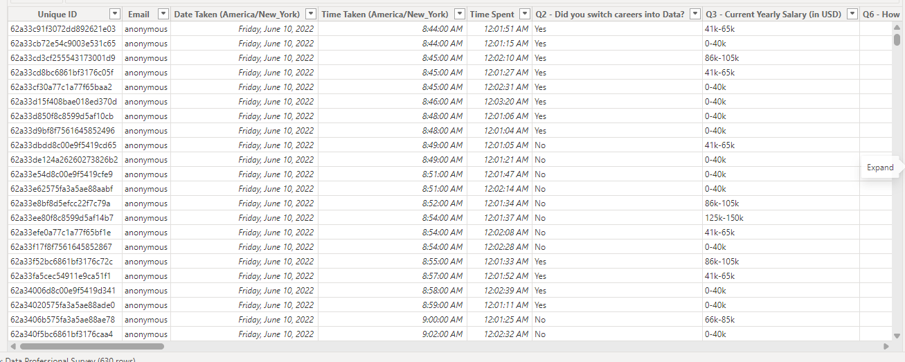
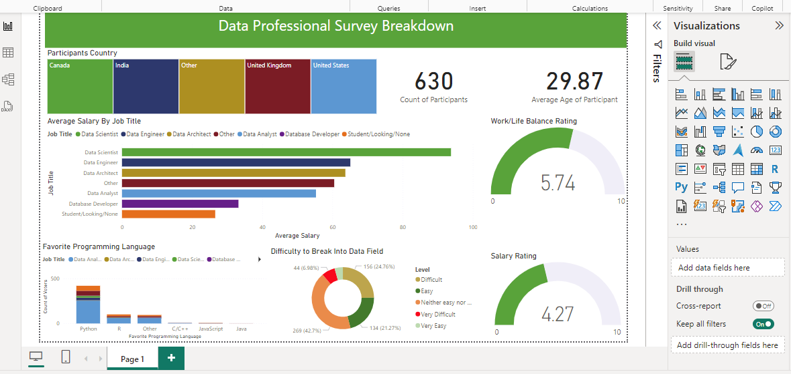

Data Professional Survey Breakdown
Goal
This project focuses on analyzing survey data to understand key trends, behaviors, and demographics of data professionals across various industries. The goal is to uncover insights about the skills, career progression, challenges, and tools used by data professionals. Using Power BI, the data was cleaned, transformed, and visualized to provide actionable insights for improving career paths, skill development, and organizational growth in the data science and analytics field.
Download from GitHub!Background Information
The dataset includes various attributes collected from data professionals, such as job roles, years of experience, education level, technical skills, preferred tools, salary ranges, and job satisfaction. It also captures responses related to career progression, challenges faced in the industry, and the most in-demand skills.
Setup
The initial step involved cleaning the data to ensure consistency and accuracy. Duplicate entries were removed, and data types were verified to ensure proper analysis. Additionally, to create more insightful visualizations, categorical data like job roles and education levels were grouped into meaningful ranges. The dataset was also checked for any missing or inconsistent data and pre-processed accordingly.
Fig 1. This image shows the dataset after it was loaded.
These steps were essential to ensure that the data was properly formatted for analysis and would yield accurate results.
Dashboard Design and Creation.
Using the processed data, I designed a comprehensive survey dashboard that provides key insights into various trends within the data profession.
Fig 2. This image shows the Data Professionals Survey Dashboard.
The dashboard also features interactive slicers, allowing users to filter data by attributes like job role, education level, and experience. This dynamic interaction lets users dive deeper into the specific factors influencing job satisfaction, career growth, and tool preferences.
Conclusion
The Survey Insights Dashboard created using Power BI serves as a powerful tool for understanding the landscape of data professionals. By identifying trends and uncovering patterns, this dashboard empowers HR professionals and organizations to make data-driven decisions to improve recruitment, retention, and career development in the analytics field.